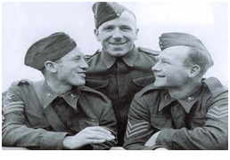

Chương 7

háng 12, 1944, khi đệ nhị thế chiến đang bước vào hồi kết cuộc, BLĐ Manchester United họp bàn về kế hoạch hậu chiến. Do Walter Crickmer không còn muốn kiêm nhiệm, mục tiêu trước mắt là tìm HLV mới. “Cứ để tôi lo”, Louis Rocca quả quyết, “Tôi biết một người rất thích hợp.”
Tan họp, Rocca viết ngay bức thư, gửi đến thượng sỹ Alexander Matthew (Matt) Busby, tiểu đoàn 9, trung đoàn Liverpool, học viện quân sự hoàng gia Sandhurst:
“Matt mến, cả tháng nay tôi tìm cậu mà không biết địa chỉ thường trực của cậu ở đâu. Điều tôi muốn nói rất quan trọng, nên không thể viết ra trong thư được. Chiến tranh sắp kết thúc rồi, cậu có kế hoạch gì chưa? Tôi có một công việc rất tuyệt đang chờ cậu, nếu cậu có hứng thú. Liên lạc với tôi theo địa chỉ trên bì thư nhé. Tôi phải bảo đảm không có ai lén đọc thư, sau đó mới giải thích rõ ràng cho cậu được. Bạn già Louis.”
Thật ra, ngay từ năm 1930, ngay khi Busby còn là cầu thủ, Rocca đã muốn ký hợp đồng với ông, nhưng United lúc đó trong túi không tiền, không đáp ứng nổi giá chuyển nhượng 150 bảng. Tuy chuyển nhượng bất thành, Rocca và Busby vẫn duy trì quan hệ thân hữu. Rocca hiểu rõ con người Busby, đoan chắc ông sẽ thành công khi dẫn dắt Manchester United.
Ernest Mangnall và Matt Busby đã đi vào huyền thoại, song ban đầu, việc lựa chọn hai ông đều gây nhiều tranh cãi. Trước khi đến Old Trafford, Mangnall chỉ có trong tay thành tích bất hảo là đã đưa hai CLB Hạng Nhất rơi xuống Hạng Nhì, còn Busby nguyên là tiền vệ trụ cột của Manchester City và Liverpool, hai đại kình “bất cộng đái thiên” của United. Trong những năm đệ nhị thế chiến, Busby nhập ngũ, lãnh trách nhiệm huấn luyện đội bóng quân đội. Thời điểm nhận thư từ Rocca, ông cũng nhận được lời mời về Liverpool, giữ vai trợ lý cho George Kay.
Hiển nhiên, chức vụ HLV trưởng Manchester United hấp dẫn hơn trợ lý HLV Liverpool. Tháng 2, 1945, Matt Busby đến gặp chủ tịch Gibson. Trước khi chấp nhận ngồi vào “ghế nóng” tại Old Trafford, ông đòi hỏi 2 điều: 1/ BLĐ không được can thiệp vào công tác chuyên môn, 2/ HLV trưởng được toàn quyền trong việc mua bán cầu thủ và thương lượng chuyển nhượng. Ông cũng báo trước: Muốn đạt thành tích bền vững thì không thể ăn xổi; cần phải gieo hạt, rồi đợi ít nhất 5 năm mới mong gặt hái quả ngọt.
Ấn tượng trước sự tự tin và quyết đoán của Busby, Gibson chấp nhận ngay. Ngày 19 tháng 2, 1945, Busby ký hợp đồng 5 năm với United, nhận lương 750 bảng/năm. CLB còn cấp riêng cho ông một căn nhà nằm cách Old Trafford 2 dặm. Đã ký hợp đồng, nhưng trước mắt, Busby vẫn tiếp tục dẫn dắt CLB quân đội[1]. Trong chuyến du đấu tại Ý cùng quân đội vào tháng 5, ông tình cờ gặp Jimmy Murphy, cựu cầu thủ của West Brom và ĐTQG xứ Wales. Busby vốn tính thâm trầm, kiệm lời, còn Murphy thì sôi nổi, có tài hùng biện, nói ra lời nào, lời ấy dễ ăn sâu vào lòng người. Nhận thấy Murphy sở hữu những tố chất bản thân mình còn thiếu, Busby mời ông về Old Trafford làm trợ lý, đồng thời nắm đội trẻ. Một kỷ nguyên mới từ đó bắt đầu.

Matt Busby (giữa) thời trong quân ngũ (Ảnh: Sportsjournalists.co.uk)
Có ban huấn luyện mới, nhưng United vẫn đang trong cảnh “vô gia cư”, bởi Old Trafford đã bị bom công phá tan tành. CLB được chính phủ cấp cho 4800 bảng để dọn dẹp sân bãi, cộng thêm 17478 để tái thiết, trùng tu SVĐ. Tuy vậy, thời hậu chiến, chính phủ Anh cũng rất nghèo, số tiền trên giải ngân rất chậm. Ước tính đến vài năm, công tác sửa chữa Old Trafford mới hoàn thành. Trong lúc chờ đợi, United phải trả cho City 5000 bảng đồng niên để thuê sân Maine Road.
Tại Maine Road, ngày 31 tháng 8, 1946, United ra quân trong trận đấu chính thức đầu tiên sau chiến tranh, thắng Grimsby Town 2-1. Trong đội hình CLB hôm đó có Allenby Chilton và Charlie Mitten. Mitten xuất thân từ MUJAC, chưa kịp lên đội một thì chiến tranh đã bùng nổ, nên bây giờ mới lần đầu được đá giải VĐQG. Về phần Chilton, độc giả hẳn còn nhớ anh ra mắt trong màu áo United vào năm 1939. Giữa trận thứ nhất và trận thứ hai, anh phải chờ suốt 7 năm!
Những chàng trai trẻ còn măng sữa năm 1939 nay bước vào lứa tuổi 27, 28. Chiến tranh đã cướp đi của họ những năm tháng đẹp nhất tuổi thanh xuân. 7 năm không bóng đá đỉnh cao đã khiến kỹ năng họ hao mòn đi ít nhiều. Như Allenby Chilton chẳng hạn, anh vẫn là cầu thủ giỏi, vẫn lập nhiều công trạng cho United, song không bao giờ đạt đến đẳng cấp một siêu sao như kỳ vọng trước đây. Nếu như không có chiến tranh, nếu như Chilton không hai lần bị thương trong quân ngũ, mọi chuyện có thể đã rất khác. Tương tự như thế, nếu sự nghiệp không bị gián đoạn, những Rowley, Carey, Pearson… có thể đạt đến đẳng cấp cao hơn rất nhiều. Nếu được chơi thêm 6 mùa, chắc chắn Rowley sẽ trở thành chân sút vĩ đại nhất trong lịch sử United, với số bàn ghi được vượt xa con số 249 của Bobby Charlton. Vâng, chúng tôi tin rằng nếu không vì đệ nhị thế chiến, Manchester United hẳn đã có thêm một hoàng kim thời đại, và số lần VĐQG của đội không dừng ở con số 20 như hiện nay.
Tuy nhiên, với một chữ “nếu”, có thể bỏ cả thế giới vào trong cái chai! Thay vì nuối tiếc những điều không có thật, chúng ta hãy cùng chuyển đề tài, hướng về Matt Busby, vị tân HLV của United. Trong suốt một phần tư thế kỷ, tới tận 1970, số phận của CLB sẽ gắn liền với ông.
Như từng nhắc đến, các vị HLV trưởng ngày xưa chỉ ngồi văn phòng, hầu như không bao giờ đặt chân xuống sân tập. Đến thập kỷ 1950 cũng vẫn như thế. Matt Busby chính là người đi tiên phong trong việc trực tiếp ra sân huấn luyện cầu thủ. Giữa lúc những đồng nghiệp luôn xúng xính trong bộ áo vest và mũ quả dưa, Busby giản dị quần đùi áo số, cùng đổ mồ hôi trên sân với học trò. Phong cách ấy khiến ông phải đối đầu cùng không ít lời đàm tiếu: HLV gì mà lại mặc quần đùi, chạy lông nhông, thật là mất thể diện!
Mặc ai nói ngả nói nghiêng, Busby vẫn một lòng kiên định: HLV nếu không chịu ra sân tập, làm sao có thể theo dõi sát sao cầu thủ, làm sao chắc chắn cầu thủ hiểu được chỉ đạo chiến thuật của mình? Đối với Busby, điều thiên hạ đều làm không nhất thiết phải là chân lý. Thời bấy giờ, đa số HLV không cho cầu thủ tập nhiều, cho rằng phải để học trò “đói bóng” thì đến cuối tuần đá mới hay. Ở United, Busby làm điều ngược lại, bắt cầu thủ phải tập nhiều hết mức có thể. Thời gian đã chứng tỏ rằng ông đúng: Ngày nay, không ai còn chủ trương bắt cầu thủ phải “đói bóng” nữa.
Busby tổ chức các bài tập theo cách rất quy củ, khoa học. Mỗi buổi sáng, cầu thủ đến sân, bắt đầu bằng bài chạy khởi động, nhưng không chạy bình thường, mà phải tăng tốc, giảm tốc liên tục như đang trong trận đấu thực sự. Để tăng sức bền, họ còn tập chạy lên chạy xuống bậc cầu thang. Sau đó mới bước vào sân cỏ luyện mảng chiến thuật: Phối hợp đá phạt, phối hợp phạt góc, chống phản công, phòng ngự khu vực…Tới cuối buổi tập thì chia ra làm hai đội thi đấu với nhau. Busby và Murphy cũng xỏ giày, mỗi người tham gia một đội. Các quả bóng dùng thi đấu đều được thấm nước cho thật nặng. Quen dùng bóng nặng thì khi đá thật với bóng nhẹ, sẽ chiếm ưu thể hơn đối phương. Ngày nay những phương pháp kể trên không có gì lạ, nhưng ở thời điểm 60-70 năm về trước, chúng thật sự mang tính đột phá, cách mạng.
Có người nhận xét Matt Busby không rành phân tích chiến thuật, chỉ biết chỉ đạo duy nhất một câu “Cứ vào mà đá”. Điều này không đúng. Busby vốn kiệm lời nên không nói nhiều, song trước mỗi trận đấu, ông đều phân tích rõ ràng cho cầu thủ điểm mạnh, điểm yếu của đối phương. Sau khi đá xong, ông lại tổ chức họp, khuyến khích cầu thủ nhìn lại, chỉ ra những ưu điểm, khuyết điểm của mình và đồng đội.
Xét về tính cách, Busby là người lịch thiệp, trầm tính. Không hay nổi nóng, thị oai, song từ thái độ nghiêm trang, từ tốn của ông toát ra một cái uy, làm người đối thoại tự nhiên phải kính nể. Từ hồi là cầu thủ, Busby đã có cái uy như thế. Nhìn vào ông, người ta biết ngay đó là một lãnh đạo.
Nếu như Alex Ferguson luôn “sấy” cầu thủ một cách không thương tiếc, Matt Busby gần như không bao giờ cao giọng. “Dùng cách áp chế thì người ta có thể nghe đấy”, Busby chia sẻ, “nhưng về lâu về dài họ không phục mình đâu”. Thay vì mắng chửi, mỗi khi cầu thủ phạm lỗi lầm gì, ông kéo họ vào một góc, nói chuyện riêng. Ông nói nhẹ nhàng mà nghiêm khắc, thấm thía. Học trò vừa biết ơn vì thầy không làm mình mất thể diện, vừa cảm thấy xấu hổ, quyết tâm khắc phục[2].
Đối với học trò, Busby luôn tôn trọng, cầu thị. Có lần, ông đang chỉ đạo thì Allenby Chilton cắt ngang:
-Thầy ngồi xuống đi. Mấy cái nay em biết rõ hơn thầy.
Ai cũng tưởng Busby sẽ nổi giận. Vậy mà không, ông bình tĩnh ngồi yên, nghe Chilton nói. Sau khi thấy Chilton phân tích chí lý, ông còn mở lời khen. Busby là vậy đó. Với ông, một cầu thủ muốn thành công cần hội đủ ba yếu tố: Kỹ năng, sự tinh nhạy, và cá tính. Trong đó, cá tính là quan trọng nhất. Thế nên, ông đánh giá cao cá tính của Chilton, và luôn tạo cơ hội cho anh phát huy.
Song le, mềm mỏng không có nghĩa là yếu đuối. Bên dưới sự mềm mỏng ấy là một tính cách vô cùng quyết đoán. Có thể nói, Busby quản lý cầu thủ bằng một bàn tay sắt bọc nhung. Dù ông không mắng ai, ai dám chống ông tất không còn đất sống tại Old Trafford. Độc giả sẽ thấy điều đó trong những chương sau…

Allenby Chilton khoác áo United từ 1939, đeo băng đội trưởng trong giai đoạn 1953-1955 (Ảnh: Dailymail.co.uk)
Chú thích:
[1] Sau này, Busby còn 2 lần khác kiêm nhiệm. Năm 1948, ông lãnh chức HLV trưởng hội tuyển Đại Anh Quốc dự Olympic tại London, và năm 1958, dẫn dắt ĐTQG Scotland.
[2] Busby cũng luôn quan tâm, bảo vệ học trò. Như khi thành viên BLĐ Harold Hardman lớn tiếng chỉ trích Johnny Carey sau một trận đấu, ông lập tức nêu ý kiến với chủ tịch Gibson, đề nghị chủ tịch can thiệp, không cho bất kỳ giám đốc nào được công khai phê phán cầu thủ.